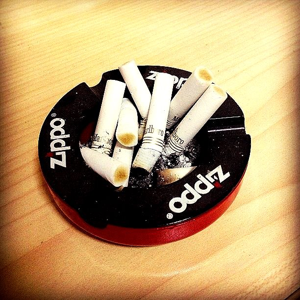

关于烟
虽然还算不上老烟民，甚至连烟民也算不上，但我还是突发奇想要说一说有关它的经历。
最早的接触要追溯到狗屁不懂的小学时期，绝不是因为同学的引诱，纯属个人的好奇。当时私匿了家里的一盒白沙烟，不时地偷偷取出一根研究一番。刚开始点上后曾试图用力吹之，发现虽然能达到同样的烟头发光的效果，但是自身毫无感觉，还会吹得烟灰乱掉，因此我得出结论：这种操作方法是错误的。顾名思义，“抽烟”当然得体现出一个“抽”字，于是醍醐灌顶的我就这样品尝到了人生中的第一口烟，而且，天赋异禀的我并没有被呛到，只是感觉到这种味道并没有多么令人留恋。这样的第一印象也许就决定了之后的我也从未因它成瘾，欲罢不能。
初中平淡无奇，似乎没怎么经历过烟草的毒害。直到高中后期，繁重的学业压力让我慢慢喜欢在早晚上下学的路上叼着烟骑车，这种2B的感觉，真是像风一样自由啊。等到毕业后，原来的同学们也都逐渐掌握了这项技能，且愈演愈烈，甚至有人在一夜之间就修炼成了似乎有数十年烟龄的老手，让人感觉是终于憋出了大招。我想，这些进步跟我们那个使用脸盆大小的烟灰缸的班主任是有关系的。
在我的大学，抽烟貌似是一种小众的行为，这一度让我觉得自己因踽踽而特立，尽管都是独行。不过后来还是有被我吸引而走上不归路的好室友。那时候抽得最多的当属中南海了，没什么味道，会让人错觉很健康。有一段时间我尝尽了各种品牌的代表作，想找出一款最爱作为长期口粮，然而，别人评价很好的我却觉得难合胃口，反而口碑一般的能让我肺中一亮。
再后来就有点看破烟草的味道了，认为不管什么也都大同小异，其实都不是什么好东西。唯一能让人喜欢某种烟的理由，可能并不是它的味道，而是一段故事，一种感觉。陌生的人，请给我一支兰州。
